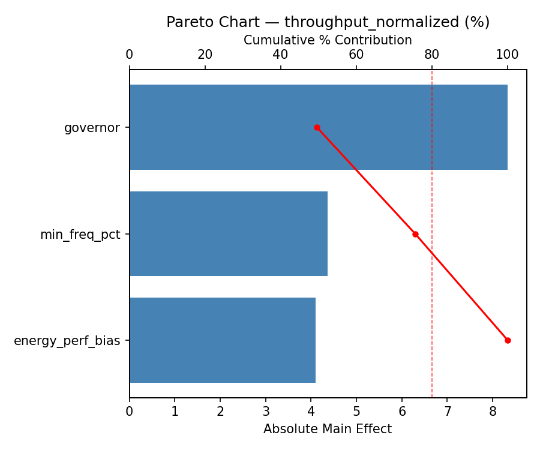
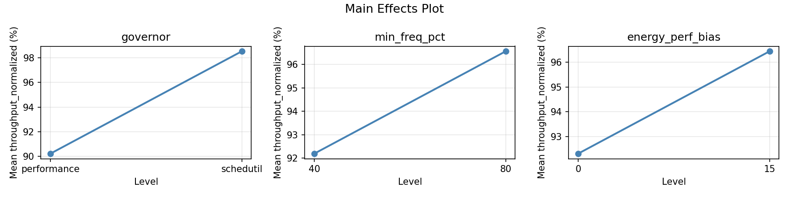
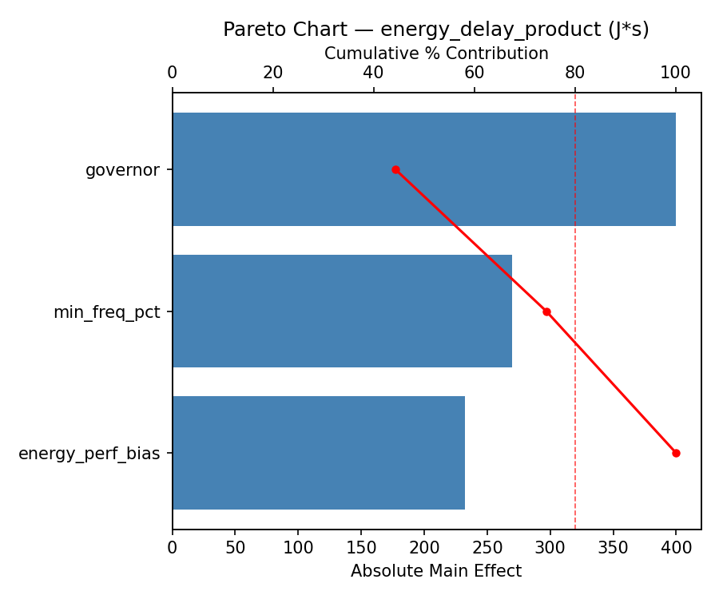
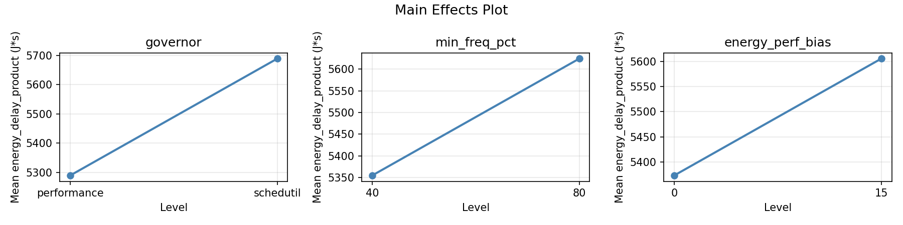
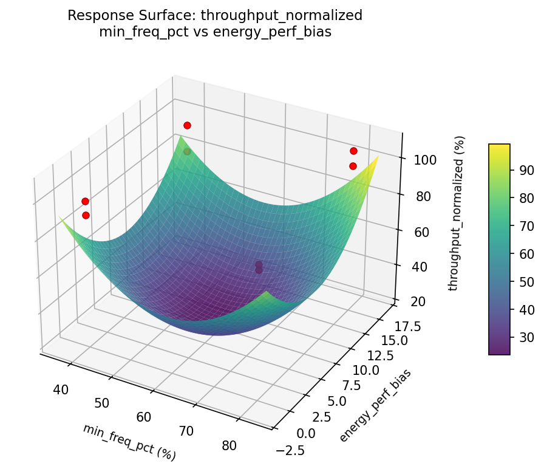
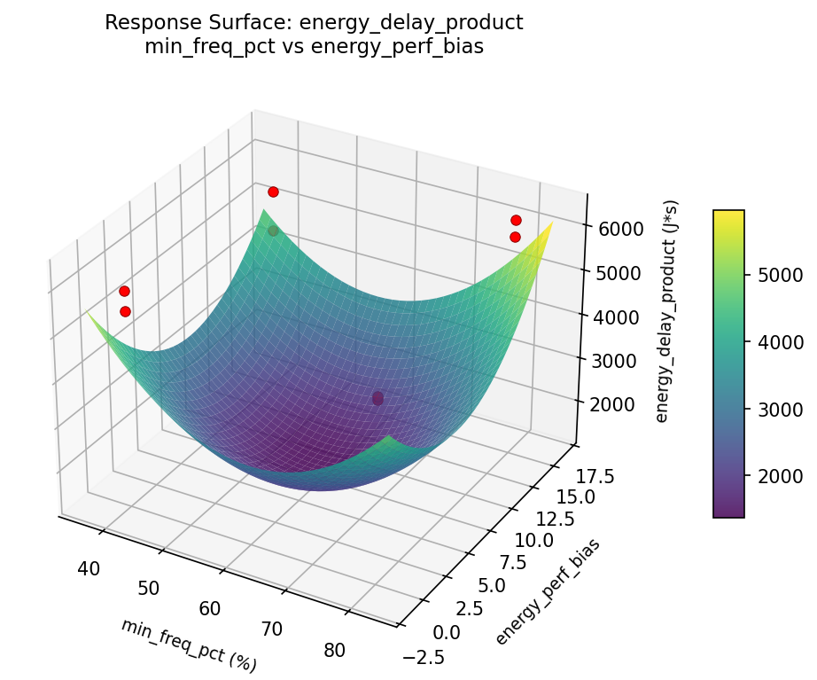

Experimental Setup
Factors
| Factor | Levels | Type | Unit |
|---|
| governor | performance / schedutil / conservative | categorical | — |
| min_freq_pct | 40 – 80 | continuous | % |
| energy_perf_bias | 0 – 15 | continuous | — |
Fixed: processor = Xeon 8490H, cores = 56, max_turbo_freq = 3500MHz, workload = mixed compute/memory, tdp = 350W
Responses
| Response | Direction | Unit |
|---|
| throughput_normalized | ↑ maximize | % |
| energy_delay_product | ↓ minimize | J·s |
Experimental Matrix
The Full Factorial Design produces 8 runs. Each row is one experiment with specific factor settings.
| Run | governor | min_freq_pct | energy_perf_bias |
|---|
| 1 | performance | 80 | 15 |
| 2 | schedutil | 40 | 0 |
| 3 | schedutil | 80 | 0 |
| 4 | schedutil | 80 | 15 |
| 5 | performance | 80 | 0 |
| 6 | schedutil | 40 | 15 |
| 7 | performance | 40 | 0 |
| 8 | performance | 40 | 15 |
How to Run
$ python doe.py info --config use_cases/25_cpu_frequency_governor/config.json
$ python doe.py generate --config use_cases/25_cpu_frequency_governor/config.json --output results/run.sh --seed 42
$ bash results/run.sh
$ python doe.py analyze --config use_cases/25_cpu_frequency_governor/config.json
$ python doe.py optimize --config use_cases/25_cpu_frequency_governor/config.json
$ python doe.py report --config use_cases/25_cpu_frequency_governor/config.json --output report.html
Analysis Results
Generated from actual experiment runs.
Response: throughput_normalized
Pareto Chart

Main Effects Plot

Response: energy_delay_product
Pareto Chart

Main Effects Plot

Response Surface Plots
3D surfaces fitted with quadratic RSM. Red dots are observed data points.
throughput: min_freq_pct vs energy_perf_bias

EDP: min_freq_pct vs energy_perf_bias

Full Analysis Output
=== Main Effects: throughput_normalized ===
Factor Effect Std Error % Contribution
--------------------------------------------------------------
energy_perf_bias -8.0402 2.6894 51.9%
min_freq_pct -4.6642 2.6894 30.1%
governor -2.7870 2.6894 18.0%
=== Interaction Effects: throughput_normalized ===
Factor A Factor B Interaction % Contribution
------------------------------------------------------------------------
min_freq_pct energy_perf_bias 4.0790 44.6%
governor energy_perf_bias -4.0742 44.6%
governor min_freq_pct 0.9842 10.8%
=== Summary Statistics: throughput_normalized ===
governor:
Level N Mean Std Min Max
------------------------------------------------------------
performance 4 95.7700 4.7669 88.6970 98.8770
schedutil 4 92.9830 10.3493 82.4210 107.2250
min_freq_pct:
Level N Mean Std Min Max
------------------------------------------------------------
40 4 96.7086 10.3602 82.4210 107.2250
80 4 92.0444 3.6295 88.6970 97.1946
energy_perf_bias:
Level N Mean Std Min Max
------------------------------------------------------------
0 4 98.3966 6.7395 90.8554 107.2250
15 4 90.3564 6.8186 82.4210 98.8770
=== Main Effects: energy_delay_product ===
Factor Effect Std Error % Contribution
--------------------------------------------------------------
energy_perf_bias -568.5400 190.2426 46.6%
min_freq_pct -391.2400 190.2426 32.1%
governor -260.4000 190.2426 21.3%
=== Interaction Effects: energy_delay_product ===
Factor A Factor B Interaction % Contribution
------------------------------------------------------------------------
governor energy_perf_bias -438.7600 53.7%
min_freq_pct energy_perf_bias 218.4400 26.7%
governor min_freq_pct 159.6200 19.5%
=== Summary Statistics: energy_delay_product ===
governor:
Level N Mean Std Min Max
------------------------------------------------------------
performance 4 5619.6700 353.2976 5162.9800 5946.5800
schedutil 4 5359.2700 711.0303 4636.6200 6313.5400
min_freq_pct:
Level N Mean Std Min Max
------------------------------------------------------------
40 4 5685.0900 727.4951 4636.6200 6313.5400
80 4 5293.8500 210.4605 5074.6200 5525.5000
energy_perf_bias:
Level N Mean Std Min Max
------------------------------------------------------------
0 4 5773.7400 403.5382 5412.3000 6313.5400
15 4 5205.2000 545.2098 4636.6200 5946.5800
Optimization Recommendations
=== Optimization: throughput_normalized ===
Direction: maximize
Best observed run: #5
governor = schedutil
min_freq_pct = 80
energy_perf_bias = 0
Value: 107.225
Factor importance:
1. min_freq_pct (effect: 5.2, contribution: 41.3%)
2. energy_perf_bias (effect: -3.8, contribution: 30.6%)
3. governor (effect: 3.5, contribution: 28.2%)
=== Optimization: energy_delay_product ===
Direction: minimize
Best observed run: #6
governor = performance
min_freq_pct = 40
energy_perf_bias = 0
Value: 4636.62
Factor importance:
1. min_freq_pct (effect: 343.1, contribution: 58.8%)
2. energy_perf_bias (effect: -180.7, contribution: 31.0%)
3. governor (effect: 59.4, contribution: 10.2%)